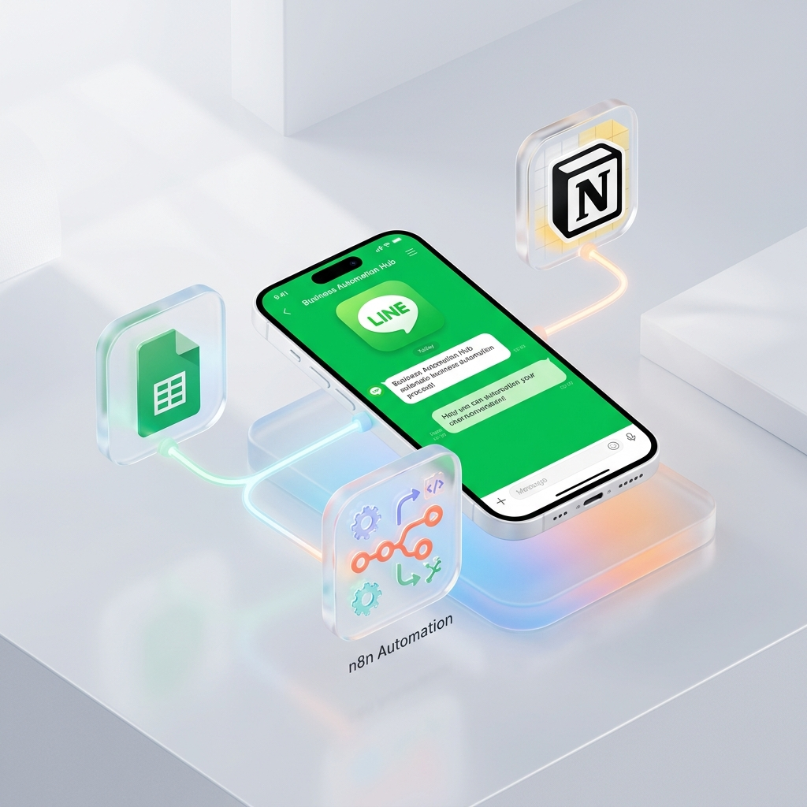

不教複雜的程式碼或系統串接，而是教您如何用自然語言（日常白話文）與 AI 溝通，讓 AI 能夠協助執行工作，完全不需要擔心不會寫語法。我們系統性統整精華，手把手帶您把 AI 融入日常工作，打造不眠不休的個人高效數位資產。

目前許多人仍停留在「把 AI 當聊天工具」的層次，每次都要手動輸入前提與背景。不知道如何配置出能在背景自動執行工作流的 AI Agent。
網路上 AI 影片與提示詞五花八門，內容破碎且缺乏系統性。花費大量時間爬文，卻遲遲無法落地應用到自己的工作上。
購買了便宜的線上錄影課，跟著做卻因為工具改版或格式不對而失敗。下課後找不到人發問，最後只好放棄。
學會用日常對話般的自然語言與 AI 溝通，並配置工作流規則，讓 AI Agent 自動代勞日常庶務，不用花時間寫語法也能釋放雙手。
我們將複雜的提示詞工程與 Agent 配置技術精簡打包，將最實用的工作範本彙整給您，免去自己抓碎資料的時間浪費。
您學會的是配置 AI Agent 的邏輯與方法。自建的助理只綁定您的個人帳號，沒有平台席位或訂閱人頭費的負擔。
目前課程推廣早期，採用珍貴的 1 對 1 / 小班制面對面帶練。未來將全面改為線上預錄課程，屆時將無法提供親自指導，請務必把握現在的落地陪跑階段！
在我們的日常專案管理中，我們運用 AI 助理將瑣碎的事務完全自動化。在課程中，我們將手把手教您如何將這套工作流邏輯套用到您自己的業務上：
開發者或行政人員下達「開工」指令，AI 助理自動抓取最新任務看板，整理好今日待辦清單，並準備好所需的工作資料。
助理在協作過程中，會自動偵測並警示任何敏感密鑰、隱私資料或 API keys，防止您無意中將重要資訊外洩或公開。
下達「收工」指令，助理自動掃描今日的成果變更，彙整並自動撰寫出格式工整的工作日誌（Walkthrough 報告）與進度紀錄。
為了累積最扎實的實戰教學案例，本階段前 10 名簽約之企業或個人，學費直接享 約 6 折早鳥優惠，並享有珍貴的一對一與小班制手把手指導。未來我們將全面轉為線上預錄課程，屆時將無法提供面對面的親自帶練與技術諮詢，請務必把握現在的黃金陪跑期！
（註：若有跨系統 API 或資料庫等複雜「串接」需求，可提供額外客製加購方案評估，不含於基礎課程內。）
| 比較項目 | 直接委託開發 / 銷售機器人 | 手把手教學培訓 (學會使用與設定) |
|---|---|---|
| 收費方式與費用 | 一次性客製建置費高（約 NT$38,000 - NT$300,000+），或年租 SaaS 訂閱費（約 **NT$2,000 - NT$39,800 / 月**） | 課程一次性費用低（早鳥價 **NT$28,800** 起）。學會後可無限自建與擴展，無人頭年約限制。 |
| 長期運行成本 | SaaS 依好友數持續加價；客製化系統每年需負擔 **15% - 25% 的維護費**。 | 極低。僅需自付主機費（約 NT$150 - NT$600 / 月）及 AI API 費用（依實際使用量實報實銷）。 |
| 調整與修改彈性 | 每次修改對話邏輯或更換報價，皆需向開發商重新報價發包，或受限於 SaaS 死板功能。 | 極高。因為熟悉工具介面與設定，可在 10 分鐘內自己修改提示詞、更動流程，即時配合最新業務。 |
| 數據自主與資安 | 資料存放在第三方平台，存在洩漏或被綁架的資安風險。 | 100% 數據私有化。AI 助理完全綁定個人帳號，數據存在您自己的 Notion 或 Google Sheets 中。 |
| 比較項目 | 市售 AI 自學錄影課 | 一般企業內訓概念班 | 本專案手把手陪跑實戰班 |
|---|---|---|---|
| 教學模式 | 單向看影片，遇到障礙無人解答 | 大班制講授概念，無實作練習 | 全程手把手帶練 ➔ 遇到卡關立即排除 |
| 教材精華度 | 零散破碎，需花上百小時到處抓資料 | 套用標準 PPT，不符合實際需要 | 系統性統整精華 ➔ 帶走開箱即用的範本 |
| 專注重點 | 僅限於基礎 ChatGPT 聊天打屁 | 只講大方向，學完仍不知如何應用 | 專注於 Agent 實際配置與每日工作流應用 |
| 成果落地性 | 無（上完課就放著，沒時間自己做） | 無（回去依然靠人工手動整理） | 保證下課時有一套專屬助理已落地可用 |
完全可以。本課程不教任何寫程式的語法，而是教您如何以自然語言（日常白話文）與 AI 溝通，以及配置助理規則。不用擔心不會寫程式或看不懂語法，即便是 AI 新手也能輕鬆上手。
這屬於進階的系統對接範疇。若您或您的企業需要特別串接外部 API 或後台系統，我們將在課程之外另外為您進行流程評估與客製化加購方案討論。